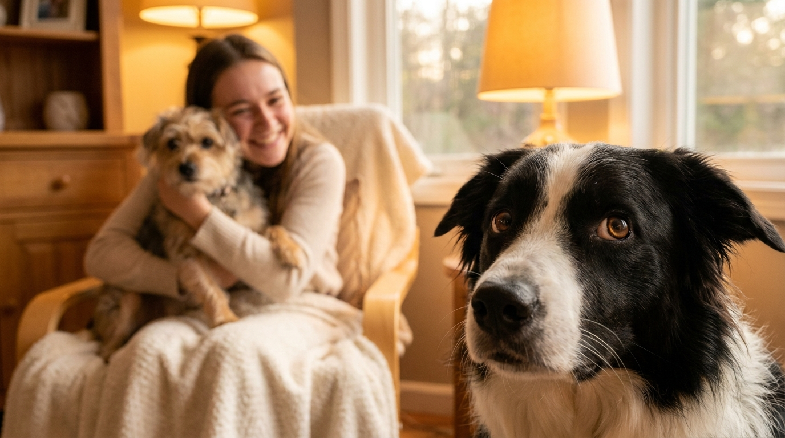

В 2014 году исследователи Калифорнийского университета провели эксперимент: хозяева собак игнорировали питомца и уделяли внимание мягкой игрушке в форме собаки. 78% настоящих собак проявили поведение, идентичное ревности у детей. С тех пор этология подтвердила: собаки ревнуют. И эту ревность можно как поддержать, так и разрушить неправильными действиями хозяина.
До середины 2010-х годов большинство этологов скептически относились к понятию «ревность» применительно к животным. Аргумент был прост: ревность — сложная эмоция, требующая самосознания и понимания чужой точки зрения.
Исследование Харрис и Прест (UC San Diego, 2014) изменило эту позицию. Собаки активнее толкали хозяина, лаяли и пытались привлечь внимание, когда те взаимодействовали с собакоподобным объектом, — и значительно слабее реагировали на нейтральный объект или книгу. Эмоциональная активация была специфически направлена на «конкурента».
Важный нюанс: собачья ревность — это не то же самое, что человеческая. В её основе лежит борьба за доступ к ресурсу (внимание хозяина), а не абстрактное чувство обиды. Это делает её более управляемой: изменив поведение хозяина, можно убрать триггер.
1. Вклинивается между вами и объектом ревности. Классический признак. Собака буквально занимает пространство между хозяином и новым питомцем, ребёнком, партнёром или даже телефоном. Не агрессивно — просто не даёт состояться контакту.
2. Толкает носом руку или кладёт лапу на колени. Требует тактильного контакта именно в момент, когда хозяин занят кем-то другим. Это не случайность — тайминг абсолютно не случаен.
3. Нытьё и скуление без видимой причины. Собака здорова, накормлена, не хочет на улицу — но скулит. Обычно направлено в сторону хозяина, пока тот взаимодействует с другим существом.
4. Агрессивное поведение по отношению к «конкуренту». Рычание, облизывание зубов, жёсткий взгляд — направленные не на хозяина, а на объект ревности. В тяжёлых случаях — снэпы (попытки укусить) при попытке «конкурента» приблизиться к хозяину.
5. Показательное игнорирование хозяина. Собака демонстративно отворачивается, уходит в другую комнату или ложится спиной. Это сигнал стресса, а не обиды в человеческом смысле. Сигнал, что собаке плохо.
6. Регрессия в поведении. Взрослая обученная собака вдруг начинает делать лужи в квартире, грызть вещи или проявлять щенячье поведение. Особенно часто — после появления в доме нового питомца или ребёнка.
7. Гиперактивность и навязчивость. Постоянное требование игры, принесение игрушек, попытки залезть на руки. Собака буквально не оставляет хозяина в покое — это конкурентное привлечение внимания.
Два состояния часто путают, но реакция хозяина должна быть разной.
Ревность: проявляется в присутствии хозяина, направлена на конкретный объект, интенсивность зависит от того, насколько хозяин занят «конкурентом». Прекращается, когда хозяин переключает внимание на собаку.
Тревога разлуки: проявляется в отсутствие хозяина или при признаках ухода (одевание, ключи, сборы). Симптомы — деструктивное поведение, вокализация, дефекация вне лотка — именно в отсутствие хозяина.
Если собака ведёт себя нормально, пока хозяин дома, но деструктивна в его отсутствие — это тревога разлуки. Если плохо себя ведёт именно когда хозяин уделяет внимание кому-то другому — ревность.
Хозяева часто непреднамеренно закрепляют ревнивое поведение. Самые распространённые ошибки:
Ревность — управляемая эмоция. Несколько стратегий, которые работают:
Предсказуемое расписание внимания. Собака должна знать: у неё есть гарантированное время хозяина. Утренняя прогулка, вечерняя игра, тактильный контакт — не «когда успею», а в одно и то же время. Предсказуемость снижает тревогу и конкурентное поведение.
Не подкреплять нежелательное, подкреплять нейтральное. Когда собака спокойно лежит рядом, пока вы заняты другим — это момент для внимания. Встали, подошли, похвалили, погладили. Собака запоминает: спокойное поведение работает лучше, чем навязчивость.
Новый объект ревности — источник хорошего. Если в доме появился новый питомец — именно его присутствие должно ассоциироваться с приятным. Угощение, игра, внимание — всё это давать, когда новый питомец рядом. Старая собака начнёт воспринимать его как предвестника хорошего, а не как угрозу.
Индивидуальное время с каждым питомцем. Если в доме несколько собак или кошка — хотя бы 10-15 минут наедине с каждым в день. Это не роскошь, это базовая потребность социального животного.
Обучение командам в ситуациях ревности. «Место», «лежать», «жди» — навыки, которые дают собаке способ справиться со стрессом без нежелательного поведения. Обученная собака знает, что делать, когда ей неприятно.
Большинство случаев ревности решаются коррекцией поведения хозяина. Но есть ситуации, где нужен зоопсихолог или кинолог, специализирующийся на поведении:
Да, предрасположенность варьируется. Собаки с высокой привязанностью к одному человеку и сильной склонностью к «пастьбе» хозяина — риск выше. Это:
Менее склонны к ревности: акита, хаски, чау-чау — породы с более высокой независимостью. Хотя индивидуальный характер важнее породы: у «несклонной» породы вполне может оказаться ревнивый экземпляр.
Появление ребёнка в семье — одна из самых сложных ситуаций для собаки. Сразу несколько изменений одновременно: незнакомые запахи, звуки, изменение режима, снижение внимания к собаке. Риск проблемного поведения высок.
Что помогает подготовиться заранее:
Агрессия собаки по отношению к ребёнку — не вопрос воспитания, это экстренная ситуация, требующая немедленной консультации ветеринарного поведенческого специалиста. Не ждите «само пройдёт».
Не всякая ревность — проблема. Здоровая привязанность собаки к хозяину — норма и даже плюс. Проблемной ситуация становится, когда:
В таких случаях коррекция нужна не потому что «так правильно», а потому что хроническая тревога причиняет собаке реальный вред — физиологический стресс разрушает иммунитет и сокращает жизнь.
Дети — частый объект ревности собаки. Маленькие дети двигаются непредсказуемо, кричат, резко хватают — собака воспринимает их как источник стресса и одновременно как «конкурента» за внимание хозяина. Это опасная комбинация.
Несколько правил безопасного сосуществования:
Ревность к ребёнку, которую не корректируют, может нарастать. Ранняя профилактика — лучший путь.
Ревнивая собака — не плохая собака. Это собака с сильной эмоциональной привязанностью и недостаточными инструментами для управления своим состоянием. Хозяин, который понимает это, перестаёт воспринимать ревность как вызов или манипуляцию — и начинает работать с причиной.
Ключевые принципы, которые работают: предсказуемость внимания, не подкреплять нежелательное поведение, создавать позитивные ассоциации с «конкурентом», и обращаться к специалисту при первых признаках агрессии. Всё остальное — терпение и последовательность.